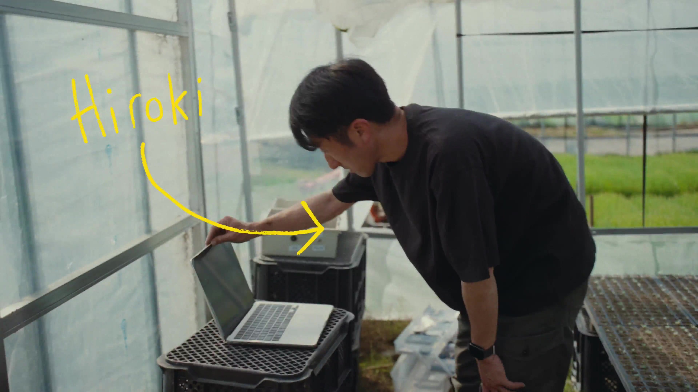
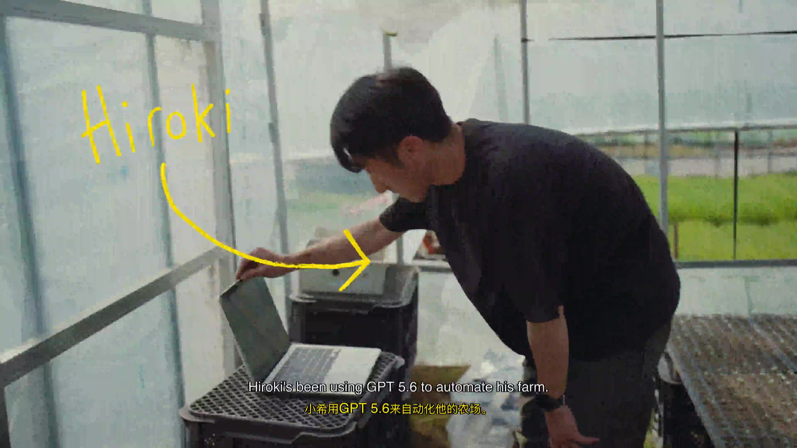

BiliMix
Translate English audio and video sentence by sentence into Chinese and read it aloud in the original speaker's voice.
Audio comes out as a Chinese-dubbed MP3, video as a dubbed MP4 with bilingual subtitles — the original lines are replaced one by one, in the original speaker's voice. Transcription, translation, and synthesis run entirely on your machine.
The same clip, before and after dubbing
The English track stays; the Chinese translation is inserted in the original speaker's voice, with synchronized bilingual subtitles.


Original voice, line by line, tunable
Audio and video share one pipeline. Chinese ratio, background music, subtitles, and the watermark are all tunable, and failures re-run from the breakpoint.
Dubbing in the original voice
Confucius4-TTS zero-shot clones the speaker's timbre to read the Chinese translation, replacing the original line by line.
Audio dubbing
English podcasts / audio, URL or local file → Chinese-dubbed MP3.
Video dubbing
YouTube / local MP4 / server path → dubbed MP4 with bilingual or Chinese-only subtitles, plus an optional watermark.
Tunable Chinese ratio
sentence_cn_ratio: 1.0 all Chinese, 0.5 alternating, 0 keeps the original audio; the original BGM can be kept.
Built for long media
Every step is persisted and failures retry from the breakpoint; long videos assemble in parallel blocks.
CLI and API
The bmx CLI and REST API cover the whole pipeline, plus a standalone TTS endpoint.
Also included: podcast subscriptions with update tracking, dubbing straight from an existing bilingual .ass / .srt (skipping transcription and translation), and word lookup.
One pipeline, four local models
Audio and video share one pipeline; with an existing bilingual subtitle file the first two steps are skipped and synthesis starts directly. Video mode adds one subtitle burn-in step at the end.
Transcription
Word-level timestamps split sentences; optional speaker diarization.
Translation
A local LLM translates every sentence into Chinese, full coverage.
Voice cloning
Synthesize Chinese speech from the original voice reference.
Assembly
Interleaved Chinese-English audio; video mode burns in subtitles.
One command to install, two to run
The install script is idempotent: completed steps are skipped, and a broken environment just needs another run.
curl -fsSL https://raw.githubusercontent.com/nowszhao/BiliMix/main/setup.sh | bash
Already cloned the repo? Run ./setup.sh. The script prepares the conda env bilimix (Python 3.10), FFmpeg and Ollama, the Python dependencies, and places Confucius4-TTS-CPU in the sibling directory.
Open http://localhost:5555 and you are ready. Startup enforces a hardware and dependency check, and exits with the fix command if anything is missing.
| Resource | Minimum | Recommended | Notes |
|---|---|---|---|
| CPU | 4 cores | 8+ cores | Transcription (8 threads) + TTS worker + FFmpeg encoding |
| Memory | 8 GB | 16 GB+ | Ollama 3-4 GB + TTS 2-4 GB per worker (1 by default on CPU) |
| Disk | 15 GB | 50 GB+ | Python env + ~10 GB of models + media caches |
| GPU | Not required | Optional 6 GB+ | Greatly accelerates TTS and WhisperX |
Memory is the main bottleneck. On lower-spec machines: use translategemma:4b, drop TTS workers to 1, and use the small WhisperX model.
Hand the whole pipeline to your scripts
bmx wraps every REST API of the web service — built for batch jobs and AI agents.
Full command reference: sdk/README.md and sdk/docs/cli.md. The CLI targets http://localhost:5000 by default; override with BILIMIX_SERVER.